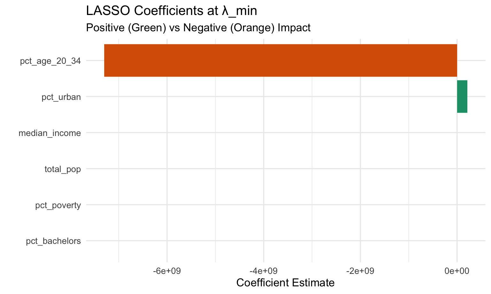

Sports Betting Analysis
Exploratory Data Analysis
Import Data
total_state_revenue = read_csv("data/total_state_revenue.csv")
model_clean_2024 = read_csv("data/model_clean_2024.csv")
demographics_2024 = read_csv("data/demographics_2024.csv")
# Pre-calculate yearly revenue summary for the Revenue by Year plot
yearly_revenue_summary = total_state_revenue |>
group_by(Year) |>
summarize(Total_Revenue = sum(Revenue, na.rm = TRUE))
# Pre-calculate data for Growth by State plot
top_states = total_state_revenue |>
filter(Year == 2024) |>
slice_max(Revenue, n = 5) |>
pull(State)
state_growth_plot_data = total_state_revenue |>
mutate(
State_Group = ifelse(State %in% top_states, State, "All Other")
) |>
group_by(Year, State_Group) |>
summarize(Revenue = sum(Revenue, na.rm = TRUE), .groups = "drop") |>
mutate(State_Group = fct_reorder(State_Group, Revenue, .desc = TRUE))Gambling Visuals
Below are several plots exploring the gambling revenue data. The first is a plot of total US gambling revenue between 2018-2024. Second is a plot of US gambling revenue across that time period among the top 5 ranked states in gambling revenue in 2024. Finally, the third plot depicts how the top 5 ranked states in gambling revenue shifted from 2018-2024.
Revenue by Year
# Plotly bar chart showing total revenue by year
plot_ly(
data = yearly_revenue_summary |> mutate(Year = as.factor(Year)),
x = ~Year,
y = ~Total_Revenue,
type = "bar",
color = ~Year,
# Use dollar format for text labels
text = ~scales::dollar(Total_Revenue / 1e9, accuracy = 0.01, suffix = "B"),
textposition = "outside",
hoverinfo = "x+y+text"
) |>
layout(
title = "Total US Gambling Revenue (2018-2024)",
xaxis = list(
title = "Year"
),
yaxis = list(
title = "Total Revenue",
tickformat = "$,"
),
showlegend = FALSE
)Growth by State
# Plotly stacked bar chart showing revenue growth by state over time
state_growth_plot_data |>
plot_ly(
x = ~Year,
y = ~Revenue,
type = "bar",
color = ~State_Group,
text = ~scales::dollar(Revenue),
hoverinfo = "x+y+text"
) |>
layout(
title = "US Gambling Revenue Growth by State",
xaxis = list(
title = "Year",
tickvals = 2018:2024
),
yaxis = list(
title = "Revenue",
tickformat = "$,"
),
barmode = "stack",
showlegend = TRUE
)Market Rank Shifts
# --- Data Processing ---
ranked_data = total_state_revenue |>
group_by(Year) |>
# Calculate rank, putting NAs last
mutate(Rank = min_rank(desc(Revenue))) |>
ungroup()
# Identify "States of Interest" (Top 5 at any point)
focus_states = ranked_data |>
filter(Rank <= 5) |>
pull(State) |>
unique()
# Filter dataset
plot_data = ranked_data |>
filter(State %in% focus_states) |>
filter(!is.na(Rank)) |> # Remove years where rank is NA (not legalized yet)
arrange(Year)
# --- Create Label Dataframes for Ends of Lines ---
# Left Side Labels (2018)
labels_start = plot_data |>
filter(Year == min(Year)) |>
mutate(label_text = paste0("#", Rank, " ", State))
# Right Side Labels (2024)
labels_end = plot_data |>
filter(Year == max(Year)) |>
mutate(label_text = paste0(State, " #", Rank))
# --- Build Plotly Object ---
plot_ly(data = plot_data) |>
# The Main Lines and Dots
add_trace(
x = ~Year,
y = ~Rank,
color = ~State,
type = 'scatter',
mode = 'lines+markers',
line = list(width = 3),
marker = list(size = 8),
# Custom Hover Text
text = ~paste0("<b>", State, "</b><br>Year: ", Year, "<br>Rank: ", Rank, "<br>Revenue: ", scales::dollar(Revenue)),
hoverinfo = "text"
) |>
# Left Side Text Labels (Start of line)
add_text(
data = labels_start,
x = ~Year,
y = ~Rank,
text = ~label_text,
color = ~State,
textposition = "middle left",
hoverinfo = "skip",
showlegend = FALSE
) |>
# Right Side Text Labels (End of line)
add_text(
data = labels_end,
x = ~Year,
y = ~Rank,
text = ~label_text,
color = ~State,
textposition = "middle right",
hoverinfo = "skip",
showlegend = FALSE
) |>
# Layout Settings
layout(
title = list(text = "<b>Shift in Top Gambling Markets (2018-2024)</b>"),
showlegend = FALSE,
xaxis = list(
title = "",
dtick = 1,
range = c(2017, 2025),
showgrid = FALSE
),
yaxis = list(
title = "Revenue Rank",
autorange = "reversed",
zeroline = FALSE,
showgrid = FALSE,
tickmode = "array",
tickvals = 1:max(plot_data$Rank, na.rm = TRUE)
),
margin = list(l = 100, r = 100)
)Demographic Visuals
Below are exploratory plots of the demographic data in 2024. The first plot shows the total population of each state in which gambling is legal, arranged by order of descending gambling revenue. The second plot shows gambling revenue by state in 2024. The third plot compares the first two plots. The fourth plot shows the racial makeup in percentage of the total population in each state in 2024, arranged in descending order of total gambling revenue. The fifth plot depicts the percentage of the total population in poverty and unemployed in 2024 in each state, arranged in descending order of total gambling revenue.
Population
# Order by Revenue (descending)
population_plot_data =
model_clean_2024 |>
filter(State != "Washington D.C.") |>
mutate(
State = as.factor(State),
State = fct_reorder(State, Revenue, .desc = TRUE)
) |>
arrange(State) # Ensure data is physically sorted to match factor order
# Extract the order for the axis
ordered_states = levels(population_plot_data$State)
population_plot =
population_plot_data |>
plot_ly(
x = ~State,
y = ~total_pop,
type = "bar",
color = ~State,
text = ~scales::comma(total_pop),
textposition = "outside",
hoverinfo = "x+y+text"
) |>
layout(
title = "Total Population by State (2024)",
xaxis = list(
title = "State (sorted by descending 2024 Revenue)",
tickangle = 90,
tickmode = "array",
tickvals = ordered_states,
ticktext = ordered_states
),
yaxis = list(
title = "Total Population"
),
showlegend = FALSE
)
population_plotRevenue
# Order by Revenue (descending)
revenue_plot_data =
model_clean_2024 |>
filter(State != "Washington D.C.") |>
mutate(
State = as.factor(State),
State = fct_reorder(State, Revenue, .desc = TRUE)
) |>
arrange(State) # Ensure data is physically sorted
# Extract order
ordered_states = levels(revenue_plot_data$State)
revenue_plot =
revenue_plot_data |>
plot_ly(
x = ~State,
y = ~Revenue,
type = "bar",
color = ~State,
text = ~scales::dollar(Revenue),
textposition = "outside",
hoverinfo = "x+y+text"
) |>
layout(
title = "Gambling Revenue by State (2024)",
xaxis = list(
title = "State (sorted by descending 2024 Revenue)",
tickangle = 90,
tickmode = "array",
tickvals = ordered_states,
ticktext = ordered_states
),
yaxis = list(
title = "Revenue",
tickformat = "$,"
),
showlegend = FALSE
)
revenue_plotComparison
# Use the Plotly objects created in the previous chunks
combined_revenue_population =
subplot(
population_plot,
revenue_plot,
nrows = 2,
shareX = TRUE,
shareY = FALSE,
titleY = TRUE,
titleX = TRUE
) |>
layout(
title = "Population vs Revenue Comparison",
showlegend = FALSE
)
combined_revenue_populationRacial Makeup
race_plot_data =
model_clean_2024 |>
filter(State != "Washington D.C.") |>
select(State, Revenue, pct_white, pct_black, pct_asian, pct_hispanic) |>
pivot_longer(
cols = pct_white:pct_hispanic,
names_to = "race",
values_to = "percentage"
) |>
mutate(
State = as.factor(State),
# 1. Reorder Factor Levels
State = fct_reorder(State, Revenue, .desc = TRUE),
race = factor(race,
levels = c("pct_white", "pct_black", "pct_asian", "pct_hispanic"),
labels = c("% White", "% Black", "% Asian", "% Hispanic"))
) |>
# 2. Arrange rows by State so lines draw sequentially left-to-right
arrange(State)
# Extract order for consistent axis
ordered_states_race = levels(race_plot_data$State)
race_plot_data |>
plot_ly(
x = ~State,
y = ~percentage,
color = ~race,
type = 'scatter',
mode = 'lines+markers',
text = ~paste(State, ": ", sprintf("%.2f%%", percentage)),
hoverinfo = 'text',
line = list(width = 2)
) |>
layout(
title = "Racial Makeup by State (Sorted by Revenue)",
xaxis = list(
title = "State",
tickangle = 90,
tickmode = "array",
tickvals = ordered_states_race,
ticktext = ordered_states_race
),
yaxis = list(
title = "Percentage of Population",
tickformat = ".1f%"
),
showlegend = TRUE
)Economic Stats
economic_plot_data =
model_clean_2024 |>
filter(State != "Washington D.C.") |>
select(State, Revenue, unemployment_rate, pct_poverty) |>
pivot_longer(
cols = c("pct_poverty", "unemployment_rate"),
names_to = "measure",
values_to = "percentage"
) |>
mutate(
State = as.factor(State),
# 1. Reorder Factor Levels
State = fct_reorder(State, Revenue, .desc = TRUE),
measure = factor(measure,
levels = c("pct_poverty", "unemployment_rate"),
labels = c("% in Poverty", "% Unemployed"))
) |>
# 2. CRITICAL: Arrange rows by State
arrange(State)
# Extract order
ordered_states_econ = levels(economic_plot_data$State)
economic_plot_data |>
plot_ly(
x = ~State,
y = ~percentage,
color = ~measure,
type = 'scatter',
mode = 'lines+markers',
text = ~paste(State, ": ", sprintf("%.2f%%", percentage)),
hoverinfo = 'text',
line = list(width = 2)
) |>
layout(
title = "Poverty & Unemployment (Sorted by Revenue)",
xaxis = list(
title = "State",
tickangle = 90,
tickmode = "array",
tickvals = ordered_states_econ,
ticktext = ordered_states_econ
),
yaxis = list(
title = "Percentage of Population",
tickformat = ".1f%"
),
showlegend = TRUE
)Predictive Modeling
Model Setup
We begin by building our training dataset, fitting a standard linear model for comparison, and handling missing values.
# Build training dataset
training_data <- model_clean_2024 |>
select(
State, Revenue, total_pop, median_income,
pct_bachelors, pct_age_20_34, pct_urban, pct_poverty
) |>
drop_na()
# Fit Linear Model for later comparison
fit_lm <- lm(
Revenue ~ total_pop + median_income + pct_bachelors +
pct_age_20_34 + pct_urban + pct_poverty,
data = training_data
)
# Prepare Illegal States Data
states_no_gambling <- demographics_2024 |>
anti_join(training_data, by = "State")
newdata_illegal <- states_no_gambling |>
select(
State, total_pop, median_income, pct_bachelors,
pct_age_20_34, pct_urban, pct_poverty
) |>
drop_na()LASSO Regression
We implement a LASSO regression to handle multicollinearity and perform feature selection.
# Build design matrix
X_train <- model.matrix(
Revenue ~ total_pop + median_income + pct_bachelors +
pct_age_20_34 + pct_urban + pct_poverty,
data = training_data)[, -1]
y_train <- training_data$Revenue
set.seed(123)
# Cross-validated LASSO
lasso_cv <- cv.glmnet(X_train, y_train, alpha = 1, nfolds = 5, standardize = TRUE)
lasso_model <- glmnet(X_train, y_train, alpha = 1, lambda = lasso_cv$lambda.min, standardize = TRUE)
# Predictions for non-gambling states
X_new <- model.matrix(
~ total_pop + median_income + pct_bachelors +
pct_age_20_34 + pct_urban + pct_poverty,
data = newdata_illegal)[, -1]
pred_illegal_lasso <- newdata_illegal |>
mutate(
predicted_revenue_lasso = as.numeric(predict(lasso_model, newx = X_new)),
predicted_revenue_lasso = pmax(predicted_revenue_lasso, 0) # Remove negative predictions
) |>
arrange(desc(predicted_revenue_lasso))Prediction Results
pred_table <- pred_illegal_lasso |>
mutate(
Predicted_Revenue = scales::dollar(predicted_revenue_lasso),
Population = scales::comma(total_pop),
Median_Income = scales::dollar(median_income)
) |>
select(
State, Population, Median_Income, pct_bachelors,
pct_age_20_34, pct_urban, pct_poverty, Predicted_Revenue
)
kable(pred_table, format = "html",
caption = "Predicted Annual Gambling Revenue for Non-Legal States (LASSO Model)") |>
kable_styling(full_width = FALSE, bootstrap_options = c("striped", "hover", "condensed"))| State | Population | Median_Income | pct_bachelors | pct_age_20_34 | pct_urban | pct_poverty | Predicted_Revenue |
|---|---|---|---|---|---|---|---|
| California | 39,431,263 | $100,149 | 0.3812365 | 0.0652504 | 0.9423663 | 0.1180257 | $3,611,645,904 |
| Texas | 31,290,831 | $79,721 | 0.3516383 | 0.0694787 | 0.8372028 | 0.1340909 | $2,765,125,447 |
| Florida | 23,372,215 | $77,735 | 0.3583638 | 0.0582353 | 0.9153419 | 0.1204723 | $2,135,268,431 |
| Georgia | 11,180,878 | $79,991 | 0.3631028 | 0.0673810 | 0.7406697 | 0.1258716 | $922,707,171 |
| Washington | 7,958,180 | $99,389 | 0.4101713 | 0.0616117 | 0.8337185 | 0.0993223 | $736,907,744 |
| Minnesota | 5,793,151 | $87,117 | 0.4003043 | 0.0634185 | 0.7187871 | 0.0933292 | $471,813,698 |
| Missouri | 6,245,466 | $71,589 | 0.3347161 | 0.0670586 | 0.6946748 | 0.1226321 | $443,937,391 |
| Wisconsin | 5,960,975 | $77,488 | 0.3455598 | 0.0673242 | 0.6708314 | 0.1032844 | $425,197,336 |
| South Carolina | 5,478,831 | $72,350 | 0.3333325 | 0.0634482 | 0.6794803 | 0.1325996 | $398,844,164 |
| Alabama | 5,157,699 | $66,659 | 0.2985358 | 0.0643101 | 0.5773724 | 0.1518804 | $327,792,352 |
| Oklahoma | 4,095,393 | $66,148 | 0.2931934 | 0.0701015 | 0.6462195 | 0.1490811 | $201,795,708 |
| Hawaii | 1,446,146 | $100,745 | 0.3775749 | 0.0586905 | 0.8606301 | 0.0998640 | $172,063,243 |
| Utah | 3,503,613 | $96,658 | 0.3911757 | 0.0874363 | 0.8978141 | 0.0832570 | $148,267,944 |
| Puerto Rico | 3,203,295 | $27,213 | 0.2969966 | 0.0663738 | 0.9187534 | 0.3730844 | $111,180,446 |
| Arkansas | 3,088,354 | $62,106 | 0.2711732 | 0.0664785 | 0.5547613 | 0.1553574 | $107,040,120 |
| New Mexico | 2,130,256 | $67,816 | 0.3178310 | 0.0681773 | 0.7454714 | 0.1641940 | $61,324,867 |
| Idaho | 2,001,619 | $81,166 | 0.3302656 | 0.0708042 | 0.6924218 | 0.1046070 | $51,404,787 |
| District of Columbia | 702,250 | $109,707 | 0.6546496 | 0.0729740 | 1.0000000 | 0.1731169 | $51,027,257 |
| Nebraska | 2,005,466 | $76,376 | 0.3535887 | 0.0714562 | 0.7300536 | 0.1087362 | $43,401,693 |
| Alaska | 740,133 | $95,665 | 0.3275460 | 0.0682283 | 0.6489949 | 0.1016680 | $0 |
| North Dakota | 796,568 | $77,871 | 0.3395173 | 0.0773305 | 0.6096684 | 0.1112829 | $0 |
This table presents the predicted gambling revenue for each state that has not yet legalized sports betting. Using the LASSO model, we estimated annual revenue based on demographic characteristics, including population size, educational attainment, urbanization, and poverty rates. The table shows that states like California, Texas, and Florida have demographic profiles similar to those of current high-revenue states, suggesting substantial untapped market potential if legalization were pursued.
Visualizing Predictions
pred_illegal_lasso_plot <- pred_illegal_lasso |>
mutate(State = factor(State, levels = State)) # Maintain sorted order
ggplot(pred_illegal_lasso_plot, aes(x = State, y = predicted_revenue_lasso)) +
geom_col(fill = "steelblue") +
coord_flip() +
scale_y_continuous(labels = scales::dollar) +
labs(
title = "Predicted Annual Gambling Revenue (if legalized)",
subtitle = "LASSO model predictions for states without legal sports gambling",
x = "",
y = "Predicted Revenue"
) +
theme_minimal(base_size = 13)
This bar chart visualizes predicted gambling revenue for each non-legal state, ranked from highest to lowest. Large states with urban populations and strong young-adult demographics (such as California, Texas, and Florida) show the highest predicted revenue, reinforcing the idea that demographic scale influences potential market size. Smaller or more rural states are projected to generate minimal revenue.
Distribution of Predictions
compare_df <- tibble(
group = c(rep("Actual Revenue (Legal States)", nrow(training_data)),
rep("Predicted Revenue (Non-Legal States)", nrow(pred_illegal_lasso))),
revenue = c(training_data$Revenue,
pred_illegal_lasso$predicted_revenue_lasso)
)
ggplot(compare_df, aes(x = revenue, fill = group)) +
geom_density(alpha = 0.4) +
scale_x_continuous(labels = scales::dollar) +
labs(
title = "Distribution of Actual vs Predicted Gambling Revenue",
# Set the x-axis title
x = "Revenue",
y = "Density",
fill = ""
) +
theme_minimal(base_size = 13)
This density plot compares the distribution of observed gambling revenue in legalized states with the predicted revenue for non-legal states. The predicted values span a wider range, with some states projecting higher revenue than current legal markets. This suggests that expansion into a few large states could dramatically reshape the national gambling landscape.
Population vs Revenue Comparison
scatter_df <- bind_rows(
training_data |> mutate(type = "Actual Revenue"),
pred_illegal_lasso |>
mutate(Revenue = predicted_revenue_lasso,
type = "Predicted Revenue")
)
ggplot(scatter_df, aes(x = total_pop, y = Revenue, color = type)) +
geom_point(size = 3, alpha = 0.7) +
scale_x_continuous(labels = scales::comma) +
scale_y_continuous(labels = scales::dollar) +
labs(
title = "Population vs Gambling Revenue",
subtitle = "Comparing actual and predicted states",
x = "Total Population",
y = "Revenue",
color = ""
) +
theme_minimal(base_size = 13)
Here we compare how population relates to revenue in both actual and predicted markets. Larger states show higher revenue but the plot also shows that population alone does not fully explain gambling revenue.
Distribution Statistics
summary_table <- tibble(
Metric = c("Min", "1st Quartile", "Median", "Mean", "3rd Quartile", "Max"),
Actual_Revenue = summary(training_data$Revenue)[c(1,2,3,4,5,6)],
Predicted_Revenue = summary(pred_illegal_lasso$predicted_revenue_lasso)[c(1,2,3,4,5,6)]
)
kable(summary_table, format = "html", caption = "Distribution Comparison: Actual vs Predicted Revenue") |>
kable_styling(full_width = FALSE, bootstrap_options = c("striped", "hover"))| Metric | Actual_Revenue | Predicted_Revenue |
|---|---|---|
| Min | 920918 | 0 |
| 1st Quartile | 60627294 | 61324867 |
| Median | 427397087 | 201795708 |
| Mean | 443822044 | 627940272 |
| 3rd Quartile | 599344939 | 471813698 |
| Max | 2059297238 | 3611645904 |
This table summarizes the distribution of actual versus predicted revenue using key statistics (min, median, mean, and quartiles). The predicted values show a higher mean and larger upper tail, reflecting how several non-legal states exceed the revenue observed in legalized states.
Model Diagnostics
LASSO Cross-Validation

This figure shows the LASSO model’s cross-validation process. Each point represents the model’s prediction error at a given penalty value (lambda). The selected λ minimizes mean-squared error, balancing model simplicity and predictive accuracy. The curve illustrates how adding too many predictors increases variance, while stronger penalization improves stability.
Actual vs Predicted
pred_lasso_train <- as.numeric(predict(lasso_model, newx = X_train))
training_data_lasso <- training_data %>%
mutate(pred_lasso = pred_lasso_train)
ggplot(training_data_lasso, aes(x = Revenue, y = pred_lasso)) +
geom_point(alpha = 0.7, color = "darkgreen", size = 3) +
geom_abline(slope = 1, intercept = 0, linetype = "dashed", color = "red") +
scale_x_continuous(labels = scales::dollar) +
scale_y_continuous(labels = scales::dollar) +
labs(
title = "Actual vs Predicted Revenue (LASSO)",
x = "Actual Revenue",
y = "Predicted Revenue"
) +
theme_minimal(base_size = 13)
This scatterplot compares predicted revenue to actual revenue in legalized states. The points generally follow an upward trend, indicating strong model performance.
Correlation Map
predictor_mat <- training_data %>%
select(total_pop, median_income, pct_bachelors, pct_age_20_34,
pct_urban, pct_poverty) %>%
as.matrix()
corr_mat <- cor(predictor_mat)
corrplot(
corr_mat,
method = "color",
type = "upper",
col = viridis(200),
tl.col = "black",
tl.srt = 45,
title = "Predictor Correlations",
mar = c(0,0,1,0)
)
This heatmap displays correlations among demographic predictors used in the modeling process. Strong correlations across income, education, population size, and poverty show multicollinearity.
Predictor Relationships
plot_df <- training_data %>%
select(Revenue, total_pop, median_income, pct_bachelors,
pct_age_20_34, pct_urban, pct_poverty) %>%
pivot_longer(-Revenue, names_to = "predictor", values_to = "value")
ggplot(plot_df, aes(x = value, y = Revenue)) +
geom_point(alpha = 0.7) +
facet_wrap(~ predictor, scales = "free_x") +
scale_y_continuous(labels = scales::dollar) +
labs(
title = "Revenue vs Key Demographic Predictors (Legal States)",
# Set x to NULL so the facet titles serve as the x-axis labels
x = NULL,
y = "Revenue"
) +
theme_minimal(base_size = 13)
These scatterplots show the relationship between individual demographic predictors and observed gambling revenue. While population and urbanization show clearer positive associations, other variables, such as poverty or median income, exhibit weak or inconsistent relationships. This reinforces the idea that gambling revenue is driven by a combination of demographic scale and specific high-engagement age groups rather than socioeconomic factors alone.
Feature Importance
coef_mat <- as.matrix(coef(lasso_cv, s = "lambda.min"))
coef_df <- tibble(
variable = rownames(coef_mat),
coefficient = coef_mat[, "lambda.min"]
) %>%
filter(variable != "(Intercept)") %>%
arrange(desc(abs(coefficient)))
ggplot(coef_df, aes(x = reorder(variable, abs(coefficient)),
y = coefficient,
fill = coefficient > 0)) +
geom_col() +
coord_flip() +
scale_fill_manual(values = c("TRUE" = "#1b9e77", "FALSE" = "#d95f02"), guide = "none") +
labs(
title = "LASSO Coefficients at λ_min",
subtitle = "Positive (Green) vs Negative (Orange) Impact",
x = "",
y = "Coefficient Estimate"
) +
theme_minimal(base_size = 13)
Model Performance
# --- Linear Model Predictions ---
lm_pred <- predict(fit_lm)
# --- LASSO Predictions ---
lasso_pred <- as.numeric(predict(lasso_model, newx = X_train))
# --- True values ---
y_true <- training_data$Revenue
# --- Comparison Metrics ---
model_metrics <- tibble(
Model = c("Linear Model", "LASSO Model"),
RMSE = c(rmse(y_true, lm_pred),
rmse(y_true, lasso_pred)),
MAE = c(mae(y_true, lm_pred),
mae(y_true, lasso_pred)),
MAPE = c(mape(y_true, lm_pred),
mape(y_true, lasso_pred))
)
model_metrics %>%
mutate(
RMSE = scales::dollar(RMSE),
MAE = scales::dollar(MAE),
MAPE = scales::percent(MAPE)
) %>%
kable(format = "html", caption = "Model Performance Comparison: Linear Model vs LASSO") %>%
kable_styling(full_width = FALSE, bootstrap_options = c("striped", "hover"))| Model | RMSE | MAE | MAPE |
|---|---|---|---|
| Linear Model | $200,127,907 | $133,430,779 | 344% |
| LASSO Model | $202,606,893 | $132,201,269 | 191% |
This table compares model performance metrics across the linear regression and LASSO model. LASSO performs similarly in RMSE but substantially better in MAPE, indicating higher stability for lower-revenue states. The comparison highlights the value of penalization when predictors show strong collinearity.
Conclusion
We compared a standard linear regression to a LASSO regularized model. Both models have sizeable error due to the extreme variability in state gambling revenues. While the linear model slightly outperforms LASSO in RMSE, the LASSO model achieves a much better MAPE (191% vs 344%), indicating more stable performance for low-revenue states.
LASSO also provides valuable model simplification: only two predictors retain nonzero coefficients—pct_age_20_34 and pct_urban, while income, population, poverty, and education are shrunk to zero. This suggests strong multicollinearity among socioeconomic indicators, with LASSO consolidating their predictive signal into a smaller set of variables. The results highlight that demographic structure (pct_age_20_34) and urbanization are the strongest predictors of sports gambling markets.